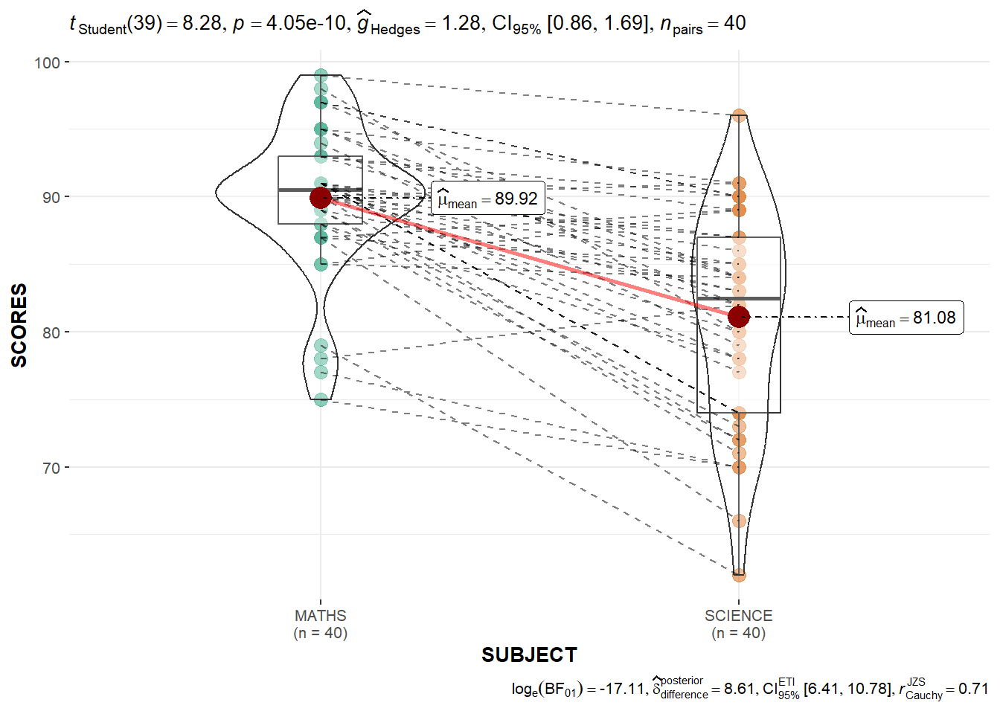

pacman::p_load(ggstatsplot, tidyverse)In-Class Exercise 4 - Fundamentals of Visual Analytics
Learning Objectives:
- Create visual graphics with rich statistical information using ggstatsplot package
- Use performance package to visualise model diagnostics
- Use parameters package to visualise model parameters
Getting Started
ggstatsplot is an extension of ggplot2 package for creating graphics with details from statistical tests included in the information-rich plots themselves.
To provide alternative statistical inference methods by default
To follow besst practices for statistical reporting
For all statistical tests resulted in the plots, the default template abides by the APA gold standard for statistical reporting
Installing and loading the required libraries
The following R packages will be used:
ggstatsplotis an extension of ggplot2 package for creating graphics with details from statstical tests included in the plots themselces
tidyverse, a family of modern R packages specially designed to support data science, analysis and communication task including creating static statistical graphs.
Code chunk below will be used to check if these packages have been installed and also will load them into the working R environment.
Importing the Data
The code chunk below imports exam_data.csv into R environment by using read_csv() function of readr package.
readr is a pacakge within tidyverse.
exam <- read_csv("data/Exam_data.csv")exam_data tibble data frame contains:
Year end examination grades of a cohort of primary 3 students from a local school.
There are a total of seven attributes. Four of them are categorical data type and the other three are in continuous data type.
The categorical attributes are: ID, CLASS, GENDER and RACE.
The continuous attributes are: MATHS, ENGLISH and SCIENCE.
One-sample test: gghistostats() method
In the code chunk below, gghistostats() is used to to build an visual of one-sample test on English scores.
set.seed(1234) # for reproducibility
p <- gghistostats(
data = exam,
x = ENGLISH,
type = "parametric",
test.value = 60,
bin.args = list(color = "black",
fill = "skyblue",
alpha = 0.7),
normal.curve = FALSE, #default value is FALSE
normal.curve.args = list(linewidth = .5),
xlab = "English Scores"
)
pDefault information: - statistical details - Bayes Factor - sample sizes - distribution summary
Extracting expressions and data frames with statistical details
ggstatsplot also offers a convenience function to extract data frames with statistical details that are used to create expressions displayed in ggstatsplot plots.
extract_stats(p)$subtitle_data
# A tibble: 1 × 15
mu statistic df.error p.value method alternative effectsize
<dbl> <dbl> <dbl> <dbl> <chr> <chr> <chr>
1 60 8.77 321 1.04e-16 One Sample t-test two.sided Hedges' g
estimate conf.level conf.low conf.high conf.method conf.distribution n.obs
<dbl> <dbl> <dbl> <dbl> <chr> <chr> <int>
1 0.488 0.95 0.372 0.603 ncp t 322
expression
<list>
1 <language>
$caption_data
# A tibble: 1 × 16
term effectsize estimate conf.level conf.low conf.high pd
<chr> <chr> <dbl> <dbl> <dbl> <dbl> <dbl>
1 Difference Bayesian t-test 7.16 0.95 5.54 8.75 1
prior.distribution prior.location prior.scale bf10 method
<chr> <dbl> <dbl> <dbl> <chr>
1 cauchy 0 0.707 4.54e13 Bayesian t-test
conf.method log_e_bf10 n.obs expression
<chr> <dbl> <int> <list>
1 ETI 31.4 322 <language>
$pairwise_comparisons_data
NULL
$descriptive_data
NULL
$one_sample_data
NULL
$tidy_data
NULL
$glance_data
NULLggdotplotstats()
In the code chunk below, the function ggdotplotstats is used to provide an easy way to make publication-ready dot plots/charts with appropriate and selected statistical details embedded in the plot itself.
ggdotplotstats(
data = exam,
x = ENGLISH,
y = CLASS,
title = "p",
xlab = "FALSE"
)Default information: - statistical details - Bayes Factor - sample sizes - distribution summary
ggwithinstats()
Transform data into suitable format for plot
exam_long <- exam %>%
pivot_longer(
cols = ENGLISH:SCIENCE,
names_to = "SUBJECT",
values_to = "SCORES"
) %>%
filter(CLASS == "3A")In the code chunk below, the function ggwithinstats is designed to facilitate data exploration, and for making highly customizable publication-ready plots, with relevant statistical details included in the plot itself if desired.

ggwithinstats(
data = filter(exam_long,
SUBJECT %in%
c("MATHS", "SCIENCE")),
x = SUBJECT,
y = SCORES,
type = "p"
)Significant Test of Correlation: ggscatterstats()
In the code chunk below, ggscatterstats() is used to build a visual for Significant Test of Correlation between Maths scores and English scores.

ggscatterstats(
data = exam,
x = MATHS,
y = ENGLISH,
marginal = TRUE,
label.var = ID, # show student ID
label.expression = ENGLISH > 90 & MATHS > 90 #criteria
) Visualising Models
Visualise model diagnostic and model parameters by using parameters package.
- Toyota Corolla case study will be used. The purpose of study is to build a model to discover factors affecting prices of used-cars by taking into consideration a set of explanatory variables.
Installing and loading the required libraries
pacman::p_load(readxl, performance, parameters, see)Importing Excel file: readxl methods
In the code chunk below, read_xls() of readxl package is used to import the data worksheet of ToyotaCorolla.xls workbook into R.
car_resale <- read_xls("data/ToyotaCorolla.xls",
"data")
car_resale# A tibble: 1,436 × 38
Id Model Price Age_08_04 Mfg_Month Mfg_Year KM Fuel_Type HP
<dbl> <chr> <dbl> <dbl> <dbl> <dbl> <dbl> <chr> <dbl>
1 1 TOYOTA Coroll… 13500 23 10 2002 46986 Diesel 90
2 2 TOYOTA Coroll… 13750 23 10 2002 72937 Diesel 90
3 3 TOYOTA Corol… 13950 24 9 2002 41711 Diesel 90
4 4 TOYOTA Coroll… 14950 26 7 2002 48000 Diesel 90
5 5 TOYOTA Coroll… 13750 30 3 2002 38500 Diesel 90
6 6 TOYOTA Coroll… 12950 32 1 2002 61000 Diesel 90
7 7 TOYOTA Corol… 16900 27 6 2002 94612 Diesel 90
8 8 TOYOTA Coroll… 18600 30 3 2002 75889 Diesel 90
9 9 TOYOTA Corol… 21500 27 6 2002 19700 Petrol 192
10 10 TOYOTA Corol… 12950 23 10 2002 71138 Diesel 69
# ℹ 1,426 more rows
# ℹ 29 more variables: Met_Color <dbl>, Color <chr>, Automatic <dbl>, CC <dbl>,
# Doors <dbl>, Cylinders <dbl>, Gears <dbl>, Quarterly_Tax <dbl>,
# Weight <dbl>, Mfr_Guarantee <dbl>, BOVAG_Guarantee <dbl>,
# Guarantee_Period <dbl>, ABS <dbl>, Airbag_1 <dbl>, Airbag_2 <dbl>,
# Airco <dbl>, Automatic_airco <dbl>, Boardcomputer <dbl>, CD_Player <dbl>,
# Central_Lock <dbl>, Powered_Windows <dbl>, Power_Steering <dbl>, …Multiple Regression Model using lm()
The code chunk below is used to calibrate a multiple linear regression model by using lm() of Base Stats of R.
model <- lm(Price ~ Age_08_04 + Mfg_Year + KM +
Weight + Guarantee_Period, data = car_resale) # list square model
model
Call:
lm(formula = Price ~ Age_08_04 + Mfg_Year + KM + Weight + Guarantee_Period,
data = car_resale)
Coefficients:
(Intercept) Age_08_04 Mfg_Year KM
-2.637e+06 -1.409e+01 1.315e+03 -2.323e-02
Weight Guarantee_Period
1.903e+01 2.770e+01 Model Diagnostic: checking for multicolinearity:
In the code chunk, check_collinearity() of performance package.
check_collinearity(model)# Check for Multicollinearity
Low Correlation
Term VIF VIF 95% CI Increased SE Tolerance Tolerance 95% CI
KM 1.46 [ 1.37, 1.57] 1.21 0.68 [0.64, 0.73]
Weight 1.41 [ 1.32, 1.51] 1.19 0.71 [0.66, 0.76]
Guarantee_Period 1.04 [ 1.01, 1.17] 1.02 0.97 [0.86, 0.99]
High Correlation
Term VIF VIF 95% CI Increased SE Tolerance Tolerance 95% CI
Age_08_04 31.07 [28.08, 34.38] 5.57 0.03 [0.03, 0.04]
Mfg_Year 31.16 [28.16, 34.48] 5.58 0.03 [0.03, 0.04]check_c <- check_collinearity(model)
plot(check_c)
Model Diagnostic: checking normality assumption
In the code chunk, check_normality() of performance package.

model1 <- lm(Price ~ Age_08_04 + KM +
Weight + Guarantee_Period, data = car_resale)
check_n <- check_normality(model1)
plot(check_n)Model Diagnostic: Check model for homogeneity of variances
In the code chunk, check_heteroscedasticity() of performance package.

check_h <- check_heteroscedasticity(model1)
plot(check_h)Model Diagnostic: Complete check
We can also perform the complete by using check_model().
check_model(model1)Visualising Regression Parameters: see methods
In the code below, plot() of see package and parameters() of parameters package is used to visualise the parameters of a regression model.

plot(parameters(model1))Visualising Regression Parameters: ggcoefstats() methods
In the code below, ggcoefstats() of ggstatsplot package to visualise the parameters of a regression model.
ggcoefstats(model1,
output = "plot")